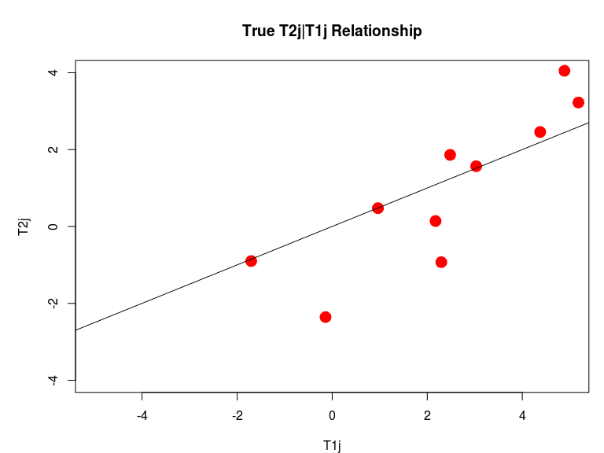
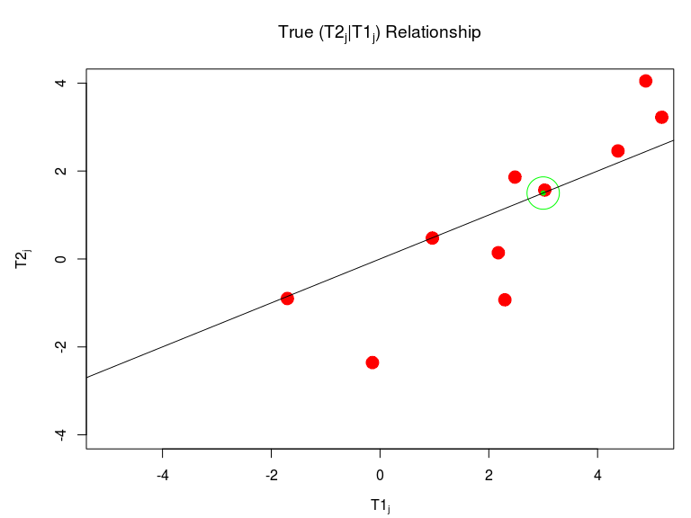
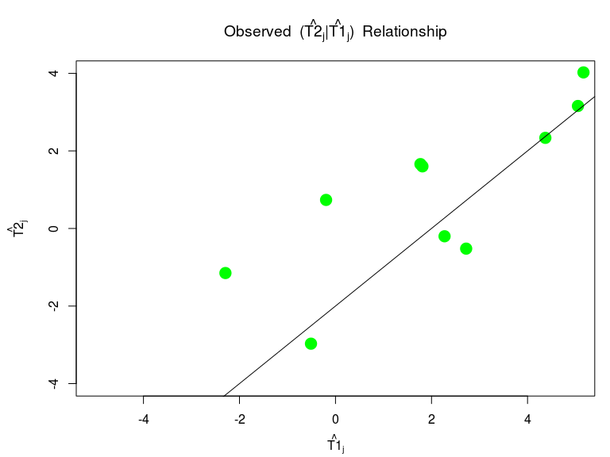
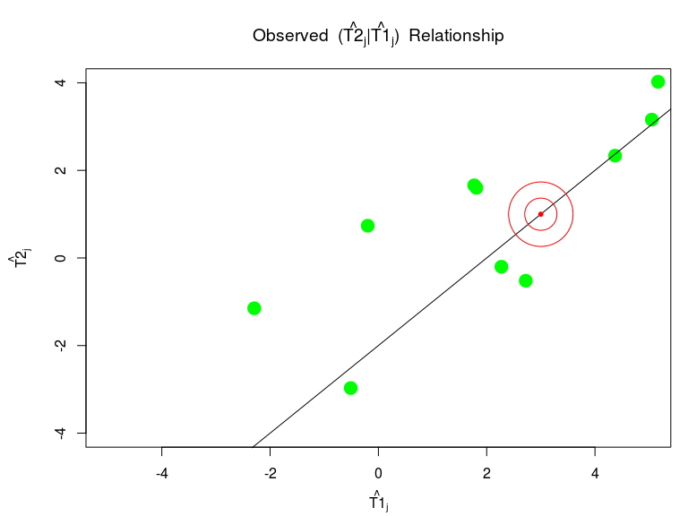
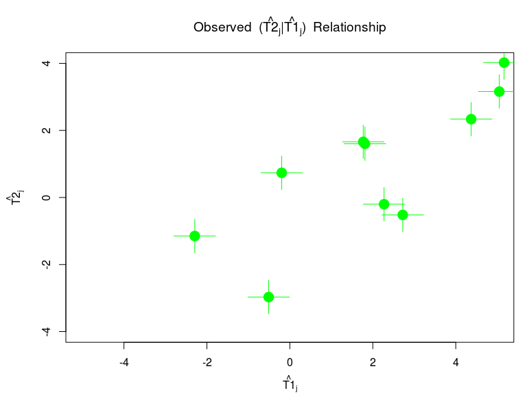

RotaTeq has different efficacy in different regions:
1.) Why does efficacy differ?
2.) Can we accurately predict what the efficacy will actually be in a new setting?
3.) Do different biomarkers or combinations of biomarkers at the trial level make better surrogates of RotaTeq efficacy?
We are attempting to develop methods to help answer 2&3.
This may give us insight into question 1, but we cannot answer this question with our methods.
If the trial level treatment effect on a biomarker can be used to accurately predict a trial level clinical treatment effect and this predictive association is generalizable to a setting, then the biomarker is a trial level general surrogate for that clinical outcome in that setting.
Gives context-any setting in which accurate prediction is possible
Defines that it is at the trial level
Correlation between the (causal) treatment effects; biomarker need not be in the causal pathway
General clinical trial setting (possible observational trial)
\(J\) trials indexed by \(j=\{1 \dots J\}\) have the same clinical endpoint of interest and same candidate GSs
The true treatment effect on the clinical outcome given the true treatment effect on the surrogate outcome.
\[T_{2j}|T_{1j}\]
Data can be collected at the subject level over the \(J\) trials
Data can be collected at the trial level
\[h_1(E[A_{ij}|Z_{ij}])=\zeta_{0j} + T_{1j} Z_{ij}\]
\[h_2(E[Y_{ij}|Z_{ij}])=\gamma_{0j} + T_{2j} Z_{ij}\]
where \(\zeta_{0j}\) and \(\gamma_{0j}\) are the trial specific intercepts
obtain \(\widehat{T}_{1j} \hspace{0.5cm}\hbox{and}\hspace{0.5cm} \widehat{T}_{2j}\)





Using an estimating equation approach the joint distribution of the estimated treatment effects can be obtained, Dai and Hughes (2012).
As given in Dai and Hughes (2012)
if we obtain the asymptotically linear estimates of \(T_{1j}\) and \(T_{2j}\), we can estimate the covariance of the estimated values within a trial \(j\).
Our method of candidate trial level GS evaluation and comparison can still be applied to trial level estimates,
provided that
If we observe or use the frequentist within trial estimation procedure to obtain \(\widehat{T}_{1j}\) and \(\widehat{T}_{2j}\), we assume that these estimates are consistent; such that
\[
E[\widehat{T}_{1j}]\rightarrow T_{1j}
\] \[
E[\widehat{T}_{2j}]\rightarrow T_{2j}.
\]
Trial specific normal likelihoods for the observed estimated treatment effects given the true treatment effects
\[f_{1jk}(\widehat{T}_{1j}|T_{1j},\hat{\sigma}_{1j})\]
\[f_{2j}(\widehat{T}_{2j}|T_{2j}, \hat{\sigma}_{2j})\]
We can assume that these estimates are conditionally independent, allowing us to derive the joint likelihood within a given trial based on these assumed models, by:
\[f_{j}(\widehat{T}_{1j},\widehat{T}_{2j}|\hat{\sigma}_{1j,k}, \hat{\sigma}_{2j},T_{2j},T_{1j})\]
\[=f_{1j}(\widehat{T}_{1j}|T_{1j},\hat{\sigma}_{1j}) \times f_{2j}(\widehat{T}_{2j}|T_{2j},\hat{\sigma}_{2j})\].
The joint likelihood over all the trials is given by \(f=\prod^{J}_{j=1}{f_{j}}\)
As outlined in Dai and Hughes (2012), we do not have to assume conditional independence between the estimates for the trials with available data. We can instead estimate the asymptotic joint distribution of \((\widehat{T}_{1j}, \widehat{T}_{2j})\): \[
f_{jk}(\widehat{T}_{1j},\widehat{T}_{1j}|\hat{\sigma}_{1j}, \hat{\sigma}_{2j},T_{2j},T_{1j})
\sim\]
\[N \left\{
\left(\begin{array}{c}
T_{1j}\\
T_{j2}
\end{array} \right)
\left(\begin{array}{cc}
\hat{\sigma}^{2}_{1j}& \hat{\sigma}_{12j} \\
\hat{\sigma}_{12j}&\hat{\sigma}^{2}_{2j}
\end{array} \right) \right\}
\].
This can be used as the likelihood for any trial with the required individual data. \(f_k\) may be the product of any set of the conditional working independence likelihoods and the joint likelihoods.
We assume a Dirichlet process mixture (DPM) of Gaussians for the distribution of the true treatment effect on the candidate trial level GS, \(T_{1j}\). Given by:
\[ T_{1j} \sim N(\mu_{1j},\tau_{1j}) \]
\[ (\mu_{1j},\tau_{1j}|G) \sim G \hspace{2cm} G \sim DP(\alpha, G_0) \]
\[ DP(\alpha, G_0) = \sum_{m=1}^{M} \alpha_m q(\mu_{1m}|\theta)*f(\tau_{1m}|\zeta). \]
Adaptive spline model \(q(t_{2j}|T_{1j},\beta,\nu)\)
Allows for a very flexible relationship between the true treatment effects
\(\epsilon_j\) are i.i.d \(N(0,\sigma_{\epsilon})\) and \(b_j \sim N(0, \kappa^{2}_{b})\).
The joint prior of \(T_{2j}\), \(T_{1j}\) and \(\beta\) and the rest of the parameters and hyper-parameters, which we will denote as \(\nu\), \(\nu=\{\tau^{2}_{1k},\tau^{2}_{2},\mu_{2},\mu_{1}, \kappa^{2}_{b} ,b_m \ldots\}\), is given by:
\[\pi(T_{2j},T_{1j},\beta,\nu)=\] \[g(T_{1j}|\mu_{1},\tau_{1})*q(t_{2j}|T_{1j},\beta,\nu)*\pi(\beta|\nu)*\pi(\nu).\]
We can then use the joint likelihood and the joint prior to define the joint posterior of interest.
We will denote this posterior by \(P_k(T_{2j},T_{1j},\beta_k, \nu| O_{J})\) for compactness, where \(O_{J}\) is all observed data in all \(J\) trials.
Estimation can carried out by MCMC using a Gibbs sampling program.
Gibbs sampling allows for us to update the full conditional distribution for each parameter, holding the other parameters constant at their last update.
We use JAGS for our simulations, but Winbugs and R both have boxed samplers that can be used as well. *The R Gibbs did not seem to mix properly for this model…
Although we do not observe \(\widehat{T}_{2J+1}\) or \(\hat{\sigma}_{2J+1}\), the likelihood for this information is included in the model.
After running the Gibbs sampler for this model, we can sample directly from the marginal posterior of \(T_{2J+1}\) given the data \(P(T_{2J+1}|O_{J},\widehat{T}_{1J+1}, \widehat{\sigma}_{1J+1})\), which is the desired posterior distribution.
Given a new trial setting
Properties of Tian et al. (2007) absolute prediction error do not hold
\[D_{J+1, k} = E|T_{2J+1}- E[T_{2J+1}|\widehat{T}_{1J+1}, \widehat{\sigma}_{1J+1}]|\]
To estimate \(D_{J+1, k}\), we first obtain \(D_{j,k}\) for a given observed trial \(j\).
\[D_{J+1, k} = E|T_{2J+1}- E[T_{2J+1}|\widehat{T}_{1J+1}, \widehat{\sigma}_{1J+1}]|\]
The marginal posterior distribution of \(T_{2j}\) can be calculated using all observed estimates related to the clinical outcome, i.e. \(\{\widehat{T}_{2j}, \widehat{\sigma}_{2j}\}\), over all the evaluation trials alone; we will denote this as \(O_{2J}\).
\[T_{2j}|O_{2J}\]
\[D_{J+1, k} = E|T_{2J+1}- E[T_{2J+1}|\widehat{T}_{1J+1}, \widehat{\sigma}_{1J+1}]|\]
leave-the-\(j\)th-trial-out estimate of \(P(T_{2j}|O_{J(-j)}, \widehat{T}_{1j}, \widehat{\sigma}_{1j,k})\), where \(O_{J(-j)}\) is all information in all \(\{1 \dots J\}\) less the clinical outcome information in trial \(j\).
This is the same predictive distribution as given above for \(T_{2J+1}\)
\[\widetilde{D}_{j,k}=E[|T_{2j}|O_{2J} - E[T_{2j}|O_{J(-j)},\widehat{T}_{1j}, \widehat{\sigma}_{1j}]|]\]
\[\widetilde{D}_{J+1,k} \sim \widetilde{D}_{j,k}\]
We considered evaluation two ways:
Classical
Predictive error
Evaluation of candidate GS for usefulness will also depend on size of a clinically relevant change in the primary outcome.
Smaller posterior medians, modes and means of \(\tilde{D}_{J+1}\) with tighter posterior credible intervals (CI) indicate better candidate trial level GS.
Information to support generalizibility is based on the characteristics of the new trial. One needs information on the \(J\) evaluation settings and the \(J+1\) new setting:
We make suggestions for conveying the information available to support the assumption of generalizability.
Between-trial estimation simulations suggest
that the method:
More testing is needed to:
We Have:
We need to:
**Analyze RotaTeq data using our method to evaluate and compare candidate trial level GS
I would like to thank my Co-authors
Professor Halloran and Professor Daniels
Dr. Michael Sachs for coding help
Merck and all RotaTeq for the opportunity to develop these methods in the context of their RotaTeq data.
Dai, J. Y., and J. P. Hughes. 2012. “A Unified Procedure for Meta-Analytic Evaluation of Surrogate End Points in Randomized Clinical Trials.” Biostatistics 13 (4): 609–24.
Korn, Edward L., Paul S. Albert, and Lisa M. McShane. 2005. “Assessing Surrogates as Trial Endpoints Using Mixed Models.” Statistics in Medicine 24 (2): 163–82.
Tian, Lu, Tianxi Cai, Els Goetghebeur, and L. J. Wei. 2007. “Model Evaluation Based on the Sampling Distribution of Estimated Absolute Prediction Error.” Biometrika 94 (2): 297–311.